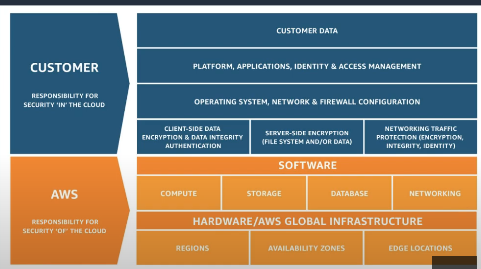

Week 5 Worklog
Date: 2025-10-07
Status: “Done”
Week: “Week 5”
Lecture Notes
Security
Shared Responsibility Model
- In cloud computing, security is a shared responsibility between the cloud provider and the customer.
- Customers must securely configure services, apply best practices, and use security controls from the hypervisor exposure upward to application/data layers.

- The split of responsibilities varies by service model:
- Infrastructure-level services
- Partially managed services
- Fully managed services

AWS Identity and Access Management (IAM)
Root Account
- Has unrestricted access to all AWS services/resources and can remove any attached permissions.
- Best practices:
- Create and use an IAM Administrator user for daily operations.
- Lock away root credentials (dual control).
- Keep the root user’s email and domain valid and renewed.
IAM Overview
- IAM controls access to AWS services and resources in your account.
- Principals include: root user, IAM users, federated users, IAM roles, assumed-role sessions, AWS services, and anonymous users.
- Notes:
- IAM users are not separate AWS accounts.
- New IAM users start with no permissions.
- Grant permissions by attaching policies to users, groups, or roles.
- Use IAM groups to manage many users (groups cannot be nested).

IAM Policies
- JSON documents defining permissions.
- Types:
- Identity-based policies (attached to principals)
- Resource-based policies (attached to resources)
- Evaluation rule: explicit Deny overrides Allow across all policies.
Pattern to constrain S3 administration:
- Allow all
s3:*actions on a specific bucket. - Explicitly Deny all non-S3 actions.

IAM Roles
- Roles provide temporary permissions assumed by users, services, or external identities.
- Common use cases:
- Let an AWS service act on your behalf (e.g., EC2 → S3 writes)
- Cross-account access
- Federation from external IdPs
- Credentials for apps on EC2 without storing access keys

Benefits
- No long-term credentials, short-lived sessions, least privilege, and easier large-scale access management.

Amazon Cognito
- Managed authentication/authorization and user management for web & mobile apps.
- Components:
- User Pools: Sign-up/sign-in user directories.
- Identity Pools: Federated identities for temporary AWS credentials to access services.


AWS Organizations
- Centrally manage multiple AWS accounts in a single organization.
Benefits
- Centralized account management
- Consolidated Billing
- Hierarchies with Organizational Units (OUs)
- Guardrails with Service Control Policies (SCPs)
Organizational Units (OUs)
- Group accounts by department, project, or environment; nest OUs for hierarchical policies.
Consolidated Billing
- One invoice for all accounts; volume pricing benefits; no extra cost.
Service Control Policies (SCPs)
- Define maximum permissions for accounts; they limit but do not grant permissions.
- Apply to accounts or OUs; affect all users/roles, including root; Deny overrides Allow.
Example SCP (deny bucket deletion)
{
"Version": "2012-10-17",
"Statement": [
{ "Effect": "Deny", "Action": ["s3:DeleteBucket"], "Resource": "*" }
]
}

AWS Identity Center (formerly AWS SSO)
- Centralizes access to AWS accounts and external applications.
- Identity sources: built-in, AWS Managed Microsoft AD, on-prem AD (trust/AD Connector), or external IdPs.
- Permission Sets define what users/groups can do in target accounts (materialized as IAM roles). Multiple permission sets per user are supported.

AWS Key Management Service (KMS)
- Managed keys for data protection with deep service integration and full auditability.
Highlights
- Create/manage keys without operating your own HSM infrastructure.
- Fine-grained access via IAM & key policies; usage logged in CloudTrail.
Key categories
- Customer-managed keys, AWS-managed keys, and AWS-owned keys.

AWS Security Hub
- Aggregates and prioritizes security findings and posture across accounts/services.
Capabilities
- Automated checks, normalized findings, prioritized remediation workflows.
- Compliance standards: CIS AWS Foundations, PCI DSS, AWS Foundational Security Best Practices.
Integrations
- GuardDuty, Inspector, Macie, Firewall Manager, IAM Access Analyzer, plus partner tools.
Outcomes
- Less time aggregating, more time fixing; unified visibility and improved security hygiene.

Exploration
AWS Certified Security – Specialty: All-in-One Exam Guide (SCS-C01)
- Comprehensive preparation material for the Security Specialty certification.
Hands-On Labs
Lab 18 – AWS Security Hub
- Enable Security Hub → 18-02
- Score for Each Set of Criteria → 18-03
- Clean Up Resources → 18-04
Lab 22 – AWS Lambda Automation with Slack
- Create VPC → 22-2.1
- Create Security Group → 22-2.2
- Create EC2 Instance → 22-2.3
- Incoming Webhooks (Slack) → 22-2.4
- Create Tag for Instance → 22-3
- Create Role for Lambda → 22-4
- Function: Stop Instance → 22-5.1
- Function: Start Instance → 22-5.2
- Check Result → 22-6
- Clean Up Resources → 22-7
Lab 27 – AWS Resource Groups & Tagging
- Create EC2 Instance with Tag → 27-2.1.1
- Manage Tags in AWS Resources → 27-2.1.2
- Filter Resources by Tag → 27-2.1.3
- Use Tags with CLI → 27-2.2
- Create a Resource Group → 27-3
- Clean Up Resources → 27-4
Lab 28 – IAM Cross-Region Role & Policy
- Create IAM User → 28-2.1
- Create IAM Policy → 28-3
- Create IAM Role → 28-4
- Switch Roles → 28-5.1
- Access EC2 Console – Tokyo → 28-5.2.1
- Access EC2 Console – N. Virginia → 28-5.2.2
- Create EC2 (No Qualified Tags) → 28-5.2.3
- Edit EC2 Resource Tag → 28-5.2.4
- Policy Check → 28-5.2.5
- Clean Up Resources → 28-6
Lab 30 – IAM Restriction Policy
- Create Restriction Policy → 30-3
- Create IAM Limited User → 30-4
- Test IAM User Limits → 30-5
- Clean Up Resources → 30-6
Lab 33 – AWS KMS & CloudTrail Integration
- Create Policy and Role → 33-2.1
- Create Group and User → 33-2.2
- Create KMS Key → 33-3
- Create S3 Bucket → 33-4.1
- Upload Data to S3 → 33-4.2
- Create CloudTrail → 33-5.1
- Log to CloudTrail → 33-5.2
- Create Amazon Athena → 33-5.3
- Query with Athena → 33-5.4
- Test & Share Encrypted S3 Data → 33-6
- Resource Cleanup → 33-7
Lab 44 – IAM Advanced Role Control
- Create IAM Group → 44-2
- Create IAM Users → 44-3.1
- Check Permissions → 44-3.2
- Create Admin IAM Role → 44-4.1
- Configure Switch Role → 44-4.2
- Restrict Switch Role by IP → 44-4.3.1
- Restrict Switch Role by Time → 44-4.3.2
- Clean Up Resources → 44-5
Lab 48 – IAM Access Keys & Roles
- Create EC2 Instance → 48-1.1
- Create S3 Bucket → 48-1.2
- Generate IAM User and Access Key → 48-2.1
- Use Access Key → 48-2.2
- Create IAM Role → 48-3.1
- Use IAM Role → 48-3.2
- Clean Up Resources → 48-4